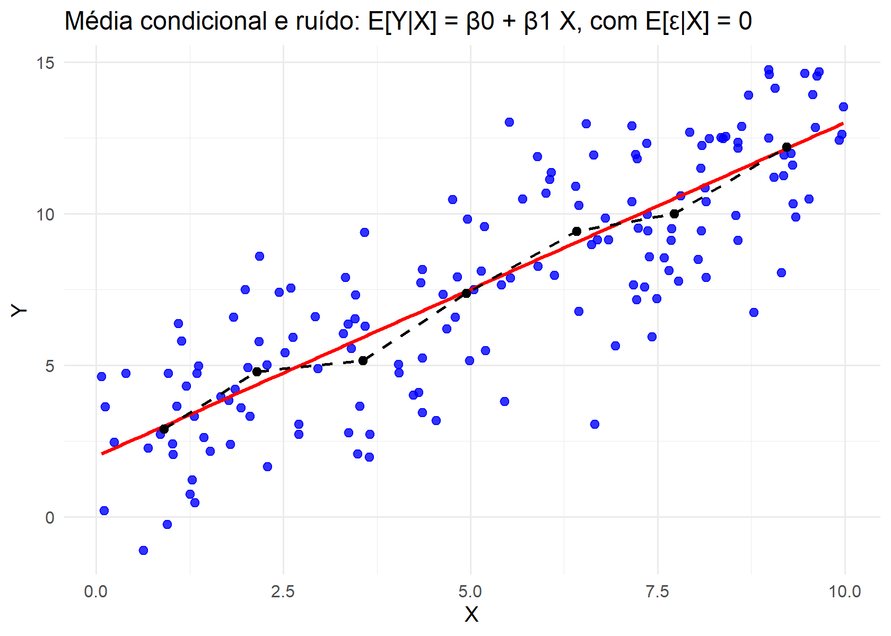

4 O MRLS como Modelo para a Média Condicional
A compreensão do Modelo de Regressão Linear Simples (MRLS) é essencial para o estudo dos modelos de regressão. Sua importância não se limita à simplicidade algébrica, mas repousa no fato de que ele estabelece as bases conceituais para toda a teoria de modelagem estatística. Ao assumir que a variação média de uma variável resposta \(Y\) pode ser explicada por uma única variável explicativa \(X\), o MRLS introduz a noção central de média condicional, isto é, a ideia de que existe uma estrutura determinística que organiza o comportamento médio dos dados, à qual se sobrepõe uma componente aleatória que representa o ruído inevitável das observações empíricas.
Essa leitura “pela média condicional” é a forma mais precisa de entender o que a regressão linear simples afirma: para cada valor fixado de \(X\), existe uma distribuição de \(Y\), e o modelo especifica como a média dessa distribuição varia com \(X\). (ver Montgomery; Peck; Vining (2021); Hoffmann (2016))
O intercepto e a inclinação da reta de regressão apresentadas anteriormente traduzem a parte sistemática do fenômeno, enquanto o erro agrega fatores não observados, variações aleatórias ou imprecisões de medição. É nessa combinação entre regularidade e aleatoriedade que se encontra a força do modelo: a regressão linear simples oferece uma linguagem matemática capaz de quantificar associações e, ao mesmo tempo, de reconhecer que o mundo real não se comporta de maneira perfeitamente determinística.
Em particular, o termo “erro” não deve ser lido como “falha”: ele representa a parcela de variabilidade de \(Y\) que permanece mesmo quando \(X\) é conhecido e o componente médio \(E(Y\mid X)\) foi especificado. (ver Kutner et al. (2005))
O MRLS pode ser usado em diferentes perspectivas. Em um primeiro plano, ele ajuda a compreender como uma variável se relaciona com outra, permitindo isolar a contribuição média de \(X\) sobre \(Y\). Em seguida, oferece meios de previsão, já que a reta ajustada pode ser utilizada para estimar valores futuros ou não observados de \(Y\). Finalmente, ele fornece um instrumento de controle, pois ao quantificar a variação esperada em \(Y\) para uma mudança em \(X\), torna-se possível avaliar de forma objetiva a influência de um fator específico mantendo os demais aspectos fixos ou controlados no desenho do estudo. Essa tríade, nomeadamente; explicação, predição e controle, sustenta a relevância prática do modelo e justifica sua centralidade tanto no ensino quanto na aplicação da estatística.
Um cuidado conceitual importante é distinguir “prever o valor médio” de “prever uma observação individual”: mesmo que a média condicional seja bem descrita, observações individuais ainda variam ao redor dessa média por causa do erro aleatório. (ver Montgomery; Peck; Vining (2021))
A intuição do MRLS pode ser visualizada em gráficos de dispersão: os pontos \((X,Y)\) representam as observações empíricas e, sobre esse conjunto, a reta de regressão traduz a tendência média. As distâncias verticais entre cada ponto e a reta correspondem aos resíduos, isto é, às variações não capturadas pelo modelo. Adicionalmente, sabendo que a relação entre \(X\) e \(Y\) pode assumir diferentes intensidades e direções, mesmo dentro de um modelo linear simples, considere os quatro cenários a seguir, todos baseados em uma reta verdadeira perturbada por erros aleatórios:
- (a) Correlação positiva forte: a inclinação da reta é positiva e os pontos se distribuem próximos a ela. O sinal determinístico domina, e o ruído é pequeno em relação à estrutura média.
- (b) Correlação positiva fraca: a reta mantém inclinação positiva, mas a dispersão em torno dela é elevada. O sinal ainda existe, mas é encoberto por grande variabilidade aleatória.
- (c) Correlação negativa forte: a inclinação é negativa e os pontos se alinham de forma clara em torno da reta decrescente. A média condicional é bem definida e o erro exerce papel secundário.
- (d) Correlação negativa fraca: a inclinação é negativa, porém os pontos apresentam grande dispersão em torno da reta. A variabilidade do erro é tão relevante quanto a estrutura determinística, tornando a associação menos evidente.
Essas quatro situações destacam a essência do MRLS: independentemente da direção ou da força da associação, o modelo parte da ideia de que a média condicional de \(Y\) pode ser descrita por uma função linear em \(X\), à qual se soma um ruído \(\varepsilon_i\) com \(E[\varepsilon_i \mid X_i]=0\).
Vale enfatizar por que essa condição é conceitualmente importante: ela expressa que, uma vez fixado \(X_i\), o termo de erro não tem tendência sistemática (em média, não empurra \(Y\) para cima nem para baixo), de modo que toda a variação média de \(Y\) com \(X\) fica concentrada no termo \(E(Y\mid X)\). Quando essa condição falha, o que se interpreta como “efeito de \(X\)” pode estar contaminado por fatores omitidos que variam com \(X\) (situação que, em econometria, está relacionada à ideia de endogeneidade). O gráfico, portanto, antecipa de forma intuitiva a formulação matemática que será detalhada na próxima seção.
Essa representação gráfica simples, mas poderosa, revela a lógica do modelo: a regressão não busca explicar cada observação em particular, mas descrever o comportamento médio de \(Y\) em função de \(X\). É nesse sentido que ela constitui uma primeira aproximação, um alicerce sobre o qual se constroem modelos mais complexos. (ver Montgomery; Peck; Vining (2021))
4.1 Formulação Matemática do MRLS
A formulação do modelo de regressão linear simples parte da ideia de que cada observação \(Y_i\) pode ser decomposta em duas partes: uma componente sistemática, que expressa o valor médio de \(Y\) condicionado a um dado valor de \(X_i\), e uma componente aleatória, que traduz as variações não explicadas. Em notação formal, escrevemos
\[ Y_i = \mu_i + \varepsilon_i, \quad \text{com} \quad \mu_i = E[Y_i \mid X_i], \] em que \(\mu_i\) é a média condicional de \(Y\) dado \(X_i\), e \(\varepsilon_i\) é o erro aleatório associado à observação \(i\).
Para que essa decomposição tenha interpretação estatística clara, é conveniente explicitar as suposições (ou hipóteses) que conectam o termo aleatório à componente sistemática. A hipótese central é que o erro, em média, não carrega informação adicional além de \(X_i\), de modo que
\[ E[\varepsilon_i \mid X_i] = 0. \] Essa condição de exogeneidade fraca garante que a parte sistemática do modelo seja, de fato, uma descrição da média condicional, e não uma mistura entre efeito sistemático e ruído (ver Gujarati (2006)). Um modo equivalente (e útil) de ler essa hipótese é: ao fixar \(X_i\), a média de \(Y_i\) é exatamente \(\mu_i\), pois
\[ E(Y_i\mid X_i)=E(\mu_i+\varepsilon_i\mid X_i)=\mu_i+E(\varepsilon_i\mid X_i)=\mu_i. \] Além da condição de média nula, frequentemente se acrescenta uma hipótese sobre a dispersão do erro, que relaciona o modelo à variância condicional de \(Y\):
\[ Var(\varepsilon_i\mid X_i)=\sigma^2. \] Por fim, para que as observações tragam informação “nova” umas em relação às outras e para que os resultados usuais de estimação e inferência sejam válidos, costuma-se assumir ausência de dependência linear entre erros de unidades distintas. Uma forma padrão de expressar isso é impor covariância nula entre erros diferentes:
\[ Cov(\varepsilon_i,\varepsilon_j\mid X_i,X_j)=0,\quad \forall i\neq j, \]
isto é, condicionando ao conjunto de regressores, os termos de erro não apresentam associação linear entre observações distintas. Em muitos textos, essa hipótese aparece na forma mais forte de independência entre os erros; a condição de covariância nula é a expressão mínima necessária para várias propriedades algébricas clássicas do modelo linear. (ver Kutner et al. (2005); Montgomery; Peck; Vining (2021))
Sob essas suposições, podemos derivar propriedades imediatas do modelo:
- Média condicional
\[ E(Y_i\mid X_i)=E(\beta_0+\beta_1X_i+\varepsilon_i \mid X_i)=\beta_0+\beta_1X_i. \]
- Variância condicional
\[ Var(Y_i\mid X_i)=E\left\{\left[Y_i-E(Y_i\mid X_i)\right]^2\mid X_i\right\}=E(\varepsilon_i^2\mid X_i)=Var(\varepsilon_i\mid X_i)=\sigma^2. \]
- Covariância condicional entre observações distintas
Para \(i\neq j\), e condicionando ao conjunto de regressores), temos
\[ Cov(Y_i,Y_j\mid X_i,X_j)=Cov(\beta_0+\beta_1X_i+\varepsilon_i,\ \beta_0+\beta_1X_j+\varepsilon_j\mid X_i,X_j)=Cov(\varepsilon_i,\varepsilon_j\mid X_i,X_j). \]
Assim, sob a hipótese \(Cov(\varepsilon_i,\varepsilon_j\mid X_i,X_j)=0\) para \(i\neq j\), segue que
\[ Cov(Y_i,Y_j\mid X_i,X_j)=0,\quad i\neq j. \]
A função de regressão do modelo é, portanto, a própria média condicional (ou média do componente sistemático):
\[ \mu(X_i;\beta_0,\beta_1)=E(Y_i\mid X_i)=\beta_0+\beta_1X_i. \]
No caso linear, supõe-se que a média condicional é uma função linear nos parâmetros, de forma que
\[ E[Y_i \mid X_i] = \mu(X_i;\beta_0,\beta_1) = \beta_0 + \beta_1 X_i, \]
o que leva à formulação completa do modelo:
\[ Y_i = \beta_0 + \beta_1 X_i + \varepsilon_i, \quad i=1,2,\dots,n. \] Uma vez especificada a função \(\mu(X_i;\beta_0,\beta_1)\) e as hipóteses sobre \(\varepsilon_i\), a tarefa estatística passa a ser estimar \(E(Y_i\mid X_i)\) (isto é, a função de regressão) a partir dos dados, tipicamente via métodos como mínimos quadrados (MMQ) e, quando apropriado, máxima verossimilhança (MMV). (ver Kutner et al. (2005); Montgomery; Peck; Vining (2021))
4.2 Interpretação dos Parâmetros e Hipóteses do Modelo
Nessa estrutura,
\[ Y_i = \beta_0 + \beta_1 X_i + \varepsilon_i, \]
\(\beta_0\) representa o valor esperado de \(Y\) quando \(X=0\), isto é,
\[ E(Y\mid X=0)=\beta_0, \]
enquanto \(\beta_1\) indica a taxa média de variação de \(Y\) a cada incremento unitário em \(X\):
\[ E(Y\mid X=x+1)-E(Y\mid X=x)=\beta_1. \]
Assim, \(\beta_1\) mede o efeito médio de uma variação unitária em \(X\) sobre a média condicional de \(Y\). O erro \(\varepsilon_i\) traduz tanto a variabilidade natural dos fenômenos quanto fatores não observados, assumindo sempre que sua esperança condicional a \(X_i\) seja nula.
É essencial notar que “\(X=0\)” pode não ter significado em alguns contextos; ainda assim, \(\beta_0\) permanece necessário como parâmetro de localização da reta. Quando \(0\) não pertence ao intervalo observado de \(X\), ou quando não possui interpretação prática, pode-se redefinir a variável explicativa por centralização (por exemplo, \(X_i^\ast = X_i - \bar X\)), de modo que o novo intercepto represente o valor esperado de \(Y\) em um ponto de referência mais informativo. (ver Montgomery; Peck; Vining (2021))
4.3 Hipóteses do MRLS
Para que o modelo tenha propriedades estatísticas bem definidas, é conveniente explicitar as hipóteses clássicas do MRLS, usualmente apresentadas na literatura de modelos lineares (ver Kutner et al. (2005)). Sob a formulação clássica, assumimos:
- Linearidade nos parâmetros
A função de regressão é linear nos parâmetros:
\[ E(Y_i\mid X_i)=\beta_0+\beta_1X_i. \]
Observe que a linearidade refere-se aos parâmetros \(\beta_0,\beta_1\), e não necessariamente à variável \(X\) em si.
- Valores de \(X\) fixos (ou condicionais)
Os valores \(X_i\) são considerados fixos pelo planejamento do estudo, ou, alternativamente, a análise é conduzida condicionalmente aos valores observados de \(X\). Essa hipótese garante que toda a aleatoriedade do modelo esteja concentrada no termo de erro.
- Erro com média zero
\[ E(\varepsilon_i\mid X_i)=0. \]
Essa condição assegura que o componente sistemático do modelo coincide com a média condicional de \(Y\).
- Homoscedasticidade
A variância do erro é constante para todos os valores de \(X\):
\[ Var(\varepsilon_i\mid X_i)=\sigma^2. \]
Consequentemente,
\[ Var(Y_i\mid X_i)=\sigma^2. \]
- Ausência de correlação entre erros
Para \(i\neq j\),
\[ Cov(\varepsilon_i,\varepsilon_j\mid X)=0. \]
Sob essa hipótese, segue que
\[ Cov(Y_i,Y_j\mid X)=0,\quad \forall i\neq j. \]
Essas cinco condições compõem o conjunto clássico de hipóteses do modelo linear simples conforme apresentado em textos de modelos lineares aplicados (ver Kutner et al. (2005)).
4.3.1 Hipóteses adicionais para inferência
Até este ponto, não foi necessário supor nenhuma distribuição específica para os erros. As hipóteses acima são suficientes para garantir propriedades como não-viesamento dos estimadores de mínimos quadrados e expressões fechadas para suas variâncias.
Para a construção de intervalos de confiança exatos e testes de hipóteses com distribuição conhecida em amostras finitas, acrescenta-se frequentemente a suposição de normalidade dos erros:
\[ \varepsilon_i \sim N(0,\sigma^2). \]
Sob essa condição, o vetor de respostas possui distribuição normal multivariada condicional a \(X\), o que permite derivar resultados exatos para estatísticas \(t\) e \(F\).
É conceitualmente importante distinguir:
- Hipóteses do modelo básico: linearidade em \(\beta_0,\beta_1\) e \(E(\varepsilon\mid X)=0\);
- Hipóteses para eficiência e inferência exata: homoscedasticidade, ausência de correlação e normalidade.
Essa distinção é enfatizada na literatura de regressão aplicada, que separa claramente a estrutura do modelo da estrutura probabilística necessária para inferência (ver Weisberg (2005)).
Por fim, essa formulação pode ser interpretada sob duas perspectivas equivalentes. Na abordagem clássica, \(X\) é tratado como fixo. Em contextos amostrais, pode-se admitir \(X\) aleatório, desde que se mantenha a condição
\[ E(\varepsilon_i\mid X_i)=0, \]
que garante a validade das propriedades do modelo condicionalmente a \(X\). Em ambas as leituras, permanece a essência: a regressão linear simples é um modelo para a média condicional de \(Y\) dado \(X\), e não para cada observação individual. (ver Gujarati (2006))
4.4 Representação Gráfica e Intuição Geométrica
A Figura a seguir ilustra o que significa afirmar que o MRLS é um modelo para a média condicional. Os pontos azuis representam as observações empíricas \((X_i,Y_i)\), que se espalham devido ao ruído aleatório \(\varepsilon_i\). A reta vermelha mostra a estrutura determinística \(\beta_0 + \beta_1 X\), isto é, o valor esperado de \(Y\) para cada valor de \(X\). Já os círculos pretos conectados indicam médias locais de \(Y\) em diferentes intervalos de \(X\), funcionando como uma aproximação empírica de \(E[Y \mid X]\). O alinhamento dessas médias com a reta reforça a ideia de que o modelo busca descrever a tendência média e não cada observação individual.
Este gráfico torna visível a condição fundamental \(E[\varepsilon_i \mid X_i]=0\). Embora cada ponto esteja sujeito a variações não explicadas, quando olhamos para a média em cada faixa de \(X\), os erros se compensam e a estrutura linear emerge. Assim, é possível notar intuitivamente por que se fala em “média condicional” e compreendemos que a regressão não elimina o ruído, mas organiza o comportamento médio das observações em torno de uma reta. (ver Charnet et al. (2008))
Mais adiante, quando abordarmos o método dos mínimos quadrados ordinários, introduziremos outra visualização complementar, na qual os resíduos aparecem como segmentos verticais entre os pontos observados e a reta ajustada. Essas representações reforçam a interpretação fundamental: o MRLS não pretende capturar cada realização individual, mas descrever a tendência média de \(Y\) em função de \(X\), admitindo explicitamente a presença de ruído.
